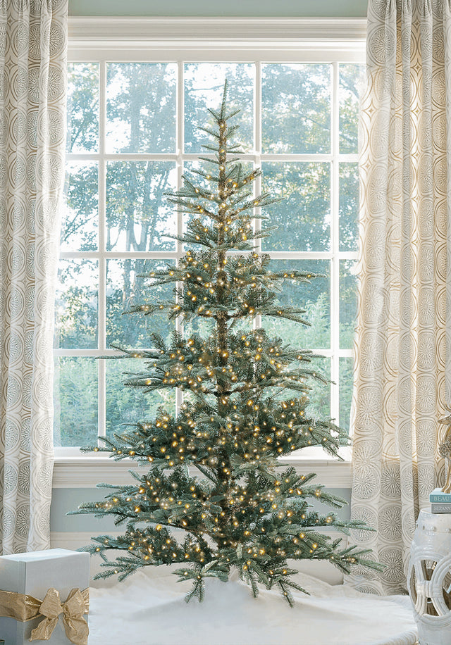

The Unlit Christmas Tree: Your Lighting, Your Rules

Choose light color, spacing, and brightness to create a balanced glow from the base to the treetop.

Choose light color, spacing, and brightness to create a balanced glow from the base to the treetop.